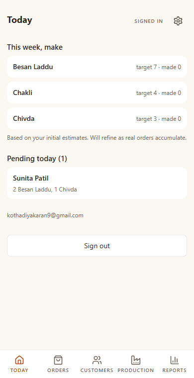
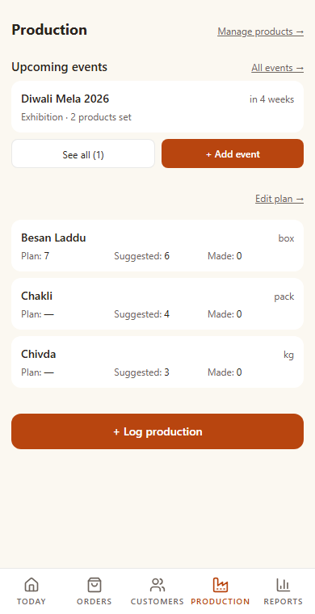
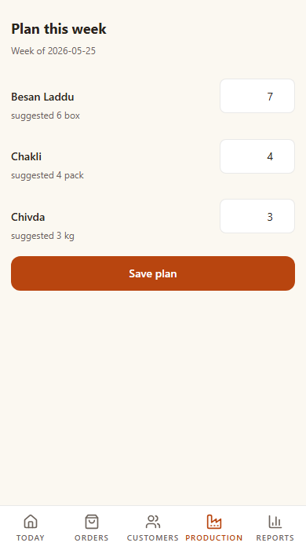
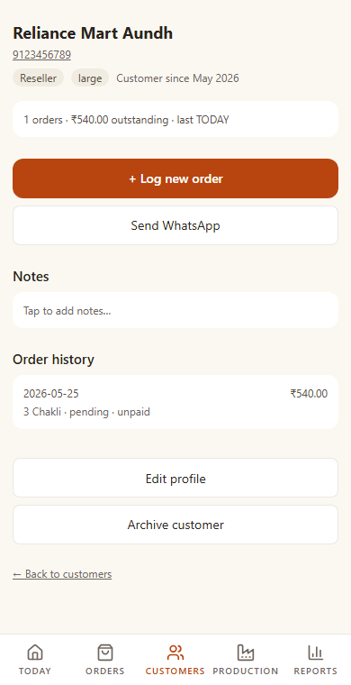
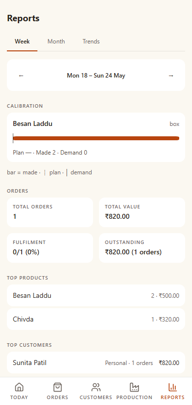

Your business,
in one place.
You make beautiful snacks. You handle orders, customers, and the team. The thinking part — what to make, who to call, what was paid — can live in this app, not in your notebook.
Three small problems. This app solves all three.
Every screen lives under one of these five.
| Today | What to do right now. Open here every morning. |
| Orders | Every order, ever. Search, filter, log new ones. |
| Customers | Every person who has bought from you. |
| Production | What to make this week. Log each batch when done. |
| Reports | Look back at the week, month, or longer. |
The gear icon on the Today screen (top-right corner) opens your business settings — name, address, bill footer. Set it once.

Top half: "This week, make." Each row tells you how much to cook.
Bottom half: "Pending today." Who needs their order today.
Tap + Log new order from anywhere. Fill in the steps. The app saves it.

For each product, the app shows: plan (your target), suggested (what the app thinks), and made (what you've done so far).
First few weeks: the app uses the numbers you set during setup.
After a month of real orders: the app learns your real rhythm. No work from you.

Every Monday, open Production → Plan this week. Look at the suggestions. Change them if you know better. Tap Save.
By Sunday you'll see how close your plan came. That's how the app learns.

Search by name or phone. Filter by channel (Personal, Reseller, Exhibition).
Tap a customer to see all their orders. Send WhatsApp opens a chat with them. Tap the phone number to copy it.
Add upcoming events (Diwali, Ganpati, mela stalls, etc). The app will increase production suggestions in the weeks before, so you're not caught short.
For exhibitions: the app gives you a special web link for that event. Print it. Share it on the stall. Customers fill the form themselves — their order and contact details come into your app automatically.

Three views at the top: Week, Month, Trends.
The numbers tell you: did you make enough? Too much? Which products are growing? No pressure — just the truth, gently.
Open any order. Tap Generate bill. A neat PDF appears. Tap Share. Send it to the customer on WhatsApp.
The bill carries your name, address, signature, and (if you have one) your GSTIN. Set these once in Settings.
Paid bills show a small PAID stamp with the date you received the money. Unpaid bills show a polite "payment due on collection" line — never accusatory.
It will feel new. That's normal. The first week, just open Today every morning and try to log one order. By the second week, the small habits will start to feel natural.
When something feels slow, or a button is in the wrong place, or you need a feature it doesn't have — tell me. We'll keep adjusting it until it fits you.
With love,
Karan
The screenshots in this booklet use example customers and products, not your real records.